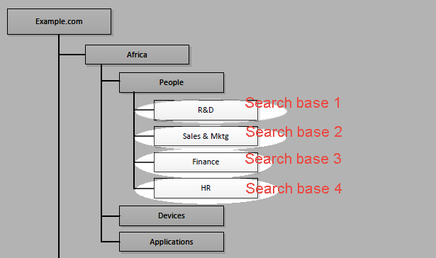

|
IdentityGuard Server 13.0 Administration Guide |
|
IdentityGuard Server 13.0 Administration Guide |
In the following example, users are found in different leaf nodes within the same sub-tree of the LDAP hierarchy. This example requires configuration of four searchbases.
Properties Editor / LDAP Sync Directory instances — This example requires four configuration instances in the LDAP Directory Server Settings.
Database — The example requires four Entrust IdentityGuard databases, one for each searchbase.
Notifications — Assuming the searchbase containers contain only user records (no nested containers), notifications about changes to user data in each container are sent to Entrust IdentityGuard by default, so no container mapping configuration is required.
Filtering — Some filtering might be required if the leaf nodes contain non-eligible users such as non-human administrator accounts.
